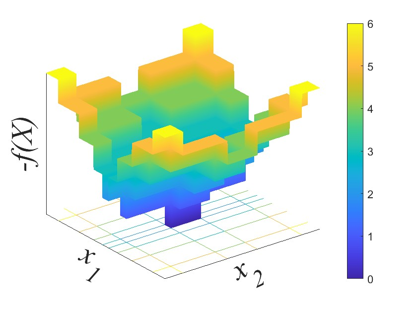

Submitted to ICML 2024
Black box optimization focuses on optimizing unknown functions in high-dimensional spaces. In certain applications, evaluating these functions is expensive, hence the optimization must be performed under tight sample budgets. Past works have approached black-box optimization using Gaussian Process Regression (GPR) and sample efficiency has been improved by utilizing information about the shape/structure of the function. We propose to discover the structure of the function by learning a GPR kernel. Learning the kernel is achieved via an auxiliary optimization in (latent) kernel space, realized inside a variation autoencoder. The optimal kernel is expected to best ``explain'' the unknown function, helping lower the sample budget. Results show that our method, Kernel Optimized Blackbox Optimization (KOBO), effectively minimizes the black-box function at a substantively lower sample budget. Results hold not only in synthetic black box functions but also in real-world applications, where audio/images need to be personalized with limited user queries.
Many problems involve the optimization of an unknown objective function. Examples include personalizing content \(x\) to maximize a user's satisfaction \(f(x)\), or training deep learning models with hyperparameters \(x\) to maximize their performance \(f(x)\). Function \(f(x)\) is unknown in these cases because it is embedded inside the human brain (for personalization) or too complex to derive (for hyper-parameter tuning). However, for any chosen sample \(x_i\), the value of \(f(x_i)\) can be evaluated. For hearing-aid personalization, say, evaluating the function would entail playing audio with some hearing-compensation filter \(x_i\) and obtaining the user's satisfaction score \(f(x_i)\). Bayesian methods like Gaussian Process Regression (GPR) are de facto approaches to black-box optimization. Using the set of function evaluations, conventional GPR learns a probabilistic surrogate model \(\hat{f}(x)\) for \(f(x)\). The optimum is estimated on this surrogate as \(\hat{x}^*\) that minimizes \(-\hat{f}(x)\).
\[\text{argmin}_{\hat{x} \in \mathcal{H}} \quad ||f(\hat{x})-f(x^*)||_2\]
\[\textrm{s.t.} \quad Q \leq B\]
where, \(Q\) is the number of times the objective function is evaluated/queried, and the query budget \(B \ll N\). Function \(f\) may be non-convex, may not have a closed-form expression, and its gradient is unavailable.
In most BBO problems, \(f(x)\) is expensive to evaluate, hence a strict sample or query budget \(B\) is of interest.
Techniques that lower this budget have garnered recent attention.
One idea is to exploit domain knowledge about the rough shape of \(f(x)\), i.e., select a GPR kernel that models this shape.
With humans, for example, \(f(x)\) may have a staircase structure as they may not perceive differences in certain neighborhoods of \(x\), but their ratings may change just outside that neighborhood.
If GPR's surrogate model \(\hat{f}(x)\) captures this staircase structure in its kernel, sample efficiency can improve.
The question is, in the absence of domain knowledge,
Our contribution is a kernel learning technique that first creates a continuous space of kernels, then optimizes on that kernel space to find the optimal kernel \(\mathbf{K}^*\) for \(\hat{f}(x)\). Briefly, a Kernel Combiner generates composite kernels by adding or multiplying simple ``basis'' kernels like Radial Basis Function (RBF), Periodic (PE), Matern (MA), etc. The resulting kernel space is discrete as it is composed of discrete kernel choices. Searching this discrete kernel space to obtain the best-suited kernel is difficult, hence we propose a generative model -- a Kernel Space Variational Autoencoder (KerVAE) -- that learns a low-dimensional continuous manifold of the discrete kernels. This manifold lives in the latent space of the VAE and computing the effectiveness of each kernel is also a black box function because it is prohibitively expensive. Hence, kernel learning is achieved through a Kernel Space GPR (KerGPR) that optimizes this low-dimensional manifold to find \(\mathbf{K}^*\).
a>We intend to characterize the performance of KOBO for synthetic satisfaction functions (with a staircase shape as shown in the Figure above) We compare with a baseline as follows:
Results below show that KOBO outperforms MCMC and achieves the minimum \(\hat{f}_{min}\) much quicker.
The Figure below shows the flow of operations for testing with real volunteers. We take an audio clip (Ground Truth) and first deliberately corrupt it and obtain the user satisfaction score for this clip (any other method must improve upon this score). We then analyze how two Baselines, Conventional GPR with SE kernel and PER kernel, and KOBO model improve user satisfaction through querying and user feedback.
We inject two types of corruption to the Ground Truth audio:
KOBO plays audio clips that are filtered with different carefully designed filters (\(x_i\)), and the user gives scores for these clips. After every batch of 5 user queries, KOBO updates the \(f\)GPR kernel with the optimal \(\mathbf{K}^*\) obtained by KerGPR. Observe that this can even be done on the fly as the user listens to music or watches the news.
Our baselines are conventional GPR with SE kernel and PER kernel that play audio clips that are filtered with different carefully designed filters (\(x_i\)), and the user gives scores for these clips. However, both the baselines use the same kernel SE or PER and do not learn a optimal kernel.
The audio demo below has 2 tables: (1) the hearing loss corruption case, and (2) the random corruption case. The table columns are example audio clips heard by six different users (U1-U6). The table rows indicate the following:
*Note: The audio quality you hear in the following
demos will be influenced by the frequency response of your audio-speaker, hence the quality you experience will not accurately reflect the quality perceived by users U1, U2, U3.
KOBO is actually compensating for each user’s audio-speaker’s response function as well, hence users U1, U2, U3, U4, U5, U6 should have
heard a better quality.
| Ground Truth | Corrupted | |||||||||||||||||
|---|---|---|---|---|---|---|---|---|---|---|---|---|---|---|---|---|---|---|
| Query | User 1 | User 2 | User 3 | User 4 | User 5 | User 6 | ||||||||||||
|---|---|---|---|---|---|---|---|---|---|---|---|---|---|---|---|---|---|---|
| SE | PER | KOBO | SE | PER | KOBO | SE | PER | KOBO | SE | PER | KOBO | SE | PER | KOBO | SE | PER | KOBO | |
| \(Q=5\) | ||||||||||||||||||
| \(Q=10\) | ||||||||||||||||||
| \(Q=15\) | ||||||||||||||||||
| \(Q=20\) | ||||||||||||||||||
| \(Q=25\) | ||||||||||||||||||
| Ground Truth | Corrupted | |||||||||||||||||
|---|---|---|---|---|---|---|---|---|---|---|---|---|---|---|---|---|---|---|
| Query | User 1 | User 2 | User 3 | User 4 | User 5 | User 6 | ||||||||||||
|---|---|---|---|---|---|---|---|---|---|---|---|---|---|---|---|---|---|---|
| SE | PER | KOBO | SE | PER | KOBO | SE | PER | KOBO | SE | PER | KOBO | SE | PER | KOBO | SE | PER | KOBO | |
| \(Q=5\) | ||||||||||||||||||
| \(Q=10\) | ||||||||||||||||||
| \(Q=15\) | ||||||||||||||||||
| \(Q=20\) | ||||||||||||||||||
| \(Q=25\) | ||||||||||||||||||
The figure below shows the User Satisfaction Scores for (a) Hearing Loss and (b) Random filters corresponding to the Audio clips above.
[1] Gardner, Jacob, et al. "Discovering and exploiting additive structure for Bayesian optimization." Artificial Intelligence and Statistics. PMLR, 2017.
[2] NHANES CDC. 2011. Centers for Disease Control and Prevention (CDC). National Center for Health Statistics (NCHS). National Health and Nutrition Examination Survey Data, Hyattsville, MD